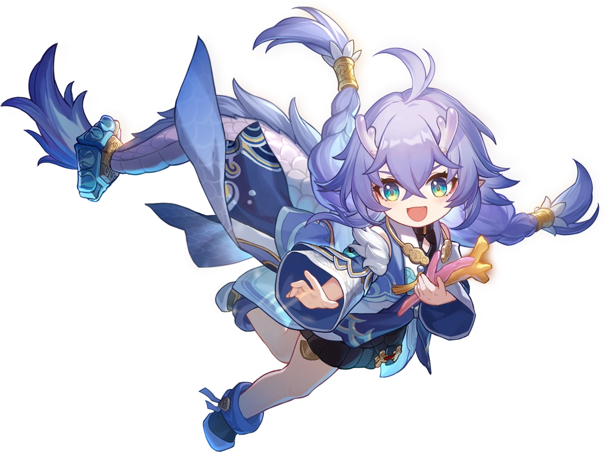
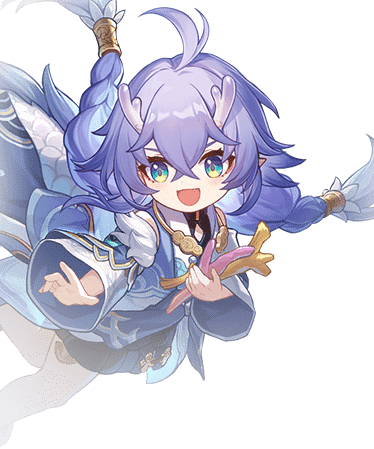

Descripcion del personaje
Bailu es el primer personaje de la Vía de la Abundancia con la categoría de cinco estrellas en Honkai Star Rail, la podremos conseguir en el banner permanente de forma aleatoria, al perder un 50/50 en un banner promocional o podemos elegirla si nos gusta mucho cuando consigamos llegar a las 300 tiradas en el banner permanente.
Todos los aspectos de este personaje están volcados única y exclusivamente en la curación, ya que todas sus habilidades curan a varios personajes del equipo o directamente a todos a la vez y también al curarlos los imbuirá en un estado llamado Vigor que curará cierta cantidad de PV cada vez que el personaje afectado sea golpeado.
Introduccion al personaje
conocido por su papel como sanadora y por ser una criatura especial en el mundo del juego. Bailu pertenece a la raza Vidyadhara, una especie dracónica que tiene habilidades especiales relacionadas con la curación. Es uno de los personajes clave dentro del mundo de Xianzhou Luofu, una de las regiones del universo de Honkai: Star Rail, famosa por su cultura antigua y por su enfoque en la inmortalidad.
Bailu es una joven doctora que tiene un don natural para la curación. Es conocida como la "Pequeña Dragona" debido a su apariencia y origen dracónico. Bailu tiene una personalidad alegre y despreocupada, siempre llena de vida y energía, lo que contrasta con las muchas responsabilidades que le recaen por ser una sanadora tan talentosa. A menudo parece un poco infantil o distraída, pero a pesar de su actitud juguetona, es extremadamente competente en su papel de sanadora, cuidando a los heridos y enfermos con dedicación.

Calidad del personaje

VIA del personaje
Abundancia

Estadisticas del personaje
- PV: 1319
- ATQ: 562
- DEF: 485
- VEL: 100
- Provocacion: 100